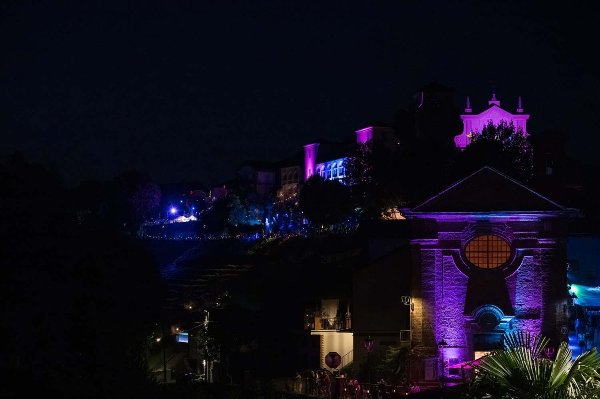
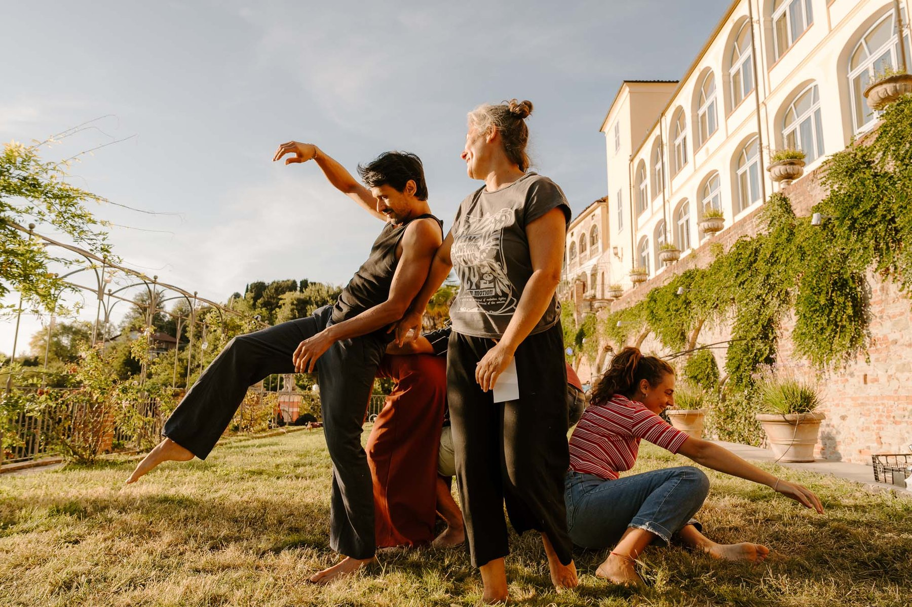
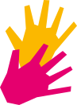
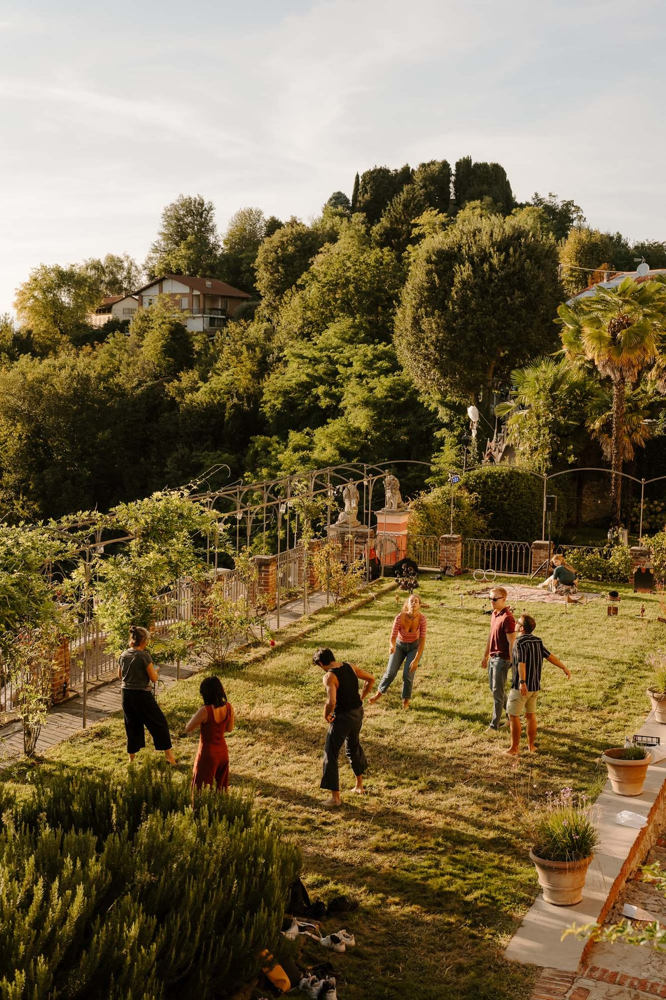
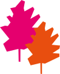

Ingresso libero · sesta edizione
Moon Festival 2027

© Ilum collettivo · Moon Festival, 5ª edizione
© Martino Zattarin · Moon Festival, 4ª edizione
Moon Lab 2027
Imparare facendo. Costruire insieme.
Dal 27 agosto al 7 settembre 2027. La residenza Moon Lab è uno spazio di incontro, ricerca e costruzione del festival. Scopri come contribuire.
Scopri Moon LabIl prossimo incontro
2027
La prossima edizione
6
Sesta edizione
3–5
Settembre · festival
0 €
Ingresso libero
 © Ilum collettivo · Moon Festival, 5ª edizione
© Ilum collettivo · Moon Festival, 5ª edizioneMoon Walk
Il viaggio fa parte del festival.
Camminare, incontrarsi, abitare il paesaggio. Il Moon comincia anche prima di arrivare nel borgo. I dettagli della prossima camminata saranno pubblicati qui.
Scopri il percorsoPartecipa tutto l’anno
Anche tu fai il Moon.


© Martino Zattarin · Moon Festival, 4ª edizione
Un festival green
La cura è una pratica.
Materiali che tornano a vivere, spostamenti condivisi e scelte quotidiane. La sostenibilità entra nel modo in cui facciamo il festival.
Le nostre pratiche © Stefano Druetta · Moon Festival, 3ª edizione
© Stefano Druetta · Moon Festival, 3ª edizioneArchivio · 2026
ATTIDICURA
Ritrova le persone, gli spettacoli e le domande della quinta edizione.
Iscriviti per ricevere aggiornamenti, call e opportunità di partecipazione.